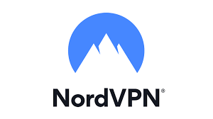
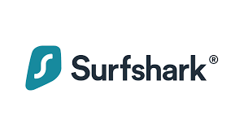
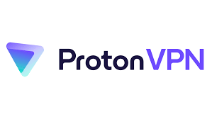

Nord-VPN is the fastest vpn and it also is a very secure VPN. They do not hold any logs. When run through a speed test it does not drop much performance which can make it useful for video streaming or downloading heavy files. The pricing on Nord VPN is known to have frequent price hikes which has caused outrage
Surfshark VPN is a very secure vpn. It beats Nord-VPN in this category due to it having more cybersecurity orientated applications that can help the user be more secure. It can include an anti-virus which is one of the best and a data removal service. The problem for Surfshark VPN is the upload speed being on the lower side
The best free VPN is Proton VPN as it is has no data limit which can benefit those who are streaming which can take up a lot of data. It is very secure as the same company also made Proton Mail which is regarded as a secure mail service. However it has high latency and your limited to the U.S, Japan, Netherlands
